Os detalhes fazem a diferença
Acessórios de Bebé: os 15 Essenciais
Babetes, meias, tiaras, chapéus, luvas e muito mais — os pequenos detalhes que completam o look e o dia a dia do teu bebé.
Os links desta página são links de afiliado da Amazon: se comprares através deles recebemos uma pequena comissão, sem custo adicional para ti. Nenhuma marca paga para aparecer aqui — vê os nossos critérios.
Comparação rápida
Todos os produtos desta página numa tabela, para comparares antes de descer aos detalhes. Cada linha liga diretamente à Amazon.
Tabela comparativa15 produtos
| Produto | Secção | Melhor para | Material | Idades | Preço | Link para a Amazon |
|---|---|---|---|---|---|---|
| Pack 8 Babetes Algodão Dupla CamadaSLOSH | Babetes | Uso diário | 100% algodão | 0–24M | € | Ver na Amazon |
| Babete Bandana Musselina — Pack 6NISXABEBE | Babetes | Fase da baba | Musselina de algodão | 3–18M | € | Ver na Amazon |
| Babetes com Bolso Impermeável SiliconeMoonkie | Babetes | Início da diversificação | Silicone | 4M+ | €€ | Ver na Amazon |
| Pack 3 pares Meias Anti-DerrapantesSoxo | Meias | Primeiros passos | Algodão | 6–24M | € | Ver na Amazon |
| Pack 4 Meias Algodão Canelado UnissexoCALZITALY | Meias | Uso diário | Algodão | 0–24M | € | Ver na Amazon |
| Conjunto Luvas + Meias + Touca Recém-Nascido — Pack 3Dre Show | Meias | Recém-nascido | 100% algodão | 0–3M | € | Ver na Amazon |
| Pack 20 Tiaras Elásticas Nylon — Bebé e CriançaJollybows | Tiaras, Chapéus | Recém-nascidas | Nylon | 0–3A | € | Ver na Amazon |
| Pack 20 Ganchos de Cabelo LaçoCHarmeFleur | Tiaras, Chapéus | A partir de 1 ano | Cetim | 1–4A | € | Ver na Amazon |
| Pack 3 Chapéus de Malha Algodão UnissexoTokaneit | Tiaras, Chapéus | Primeiros meses | 100% algodão | RN–6M | € | Ver na Amazon |
| Pack 4 Fraldas de Musselina Algodão Orgânicoaden + anais | Cobertores | Fazer de tudo | Musselina orgânica | 0–3A | €€€ | Ver na Amazon |
| Manta de Tricot Algodão Orgânico 90×70cmLivella | Cobertores | Carrinho e berço | Algodão orgânico | 0–2A | €€ | Ver na Amazon |
| Manta com Sistema de Embrulho para Recém-NascidoVicloon | Cobertores | Primeiros 3 meses | Algodão | 0–3M | € | Ver na Amazon |
| Pack 2 Chupetas Ultra Air 0–6 MesesPhilips Avent | Chupetas | Primeiros 6 meses | Silicone | 0–6M | € | Ver na Amazon |
| Escova de dentes de dedo para bebésMushie | Chupetas | A partir dos 6 meses | Silicone | 6M+ | € | Ver na Amazon |
| Chupeta Borracha Natural — Pack 2 — Denmark DesignBIBS | Chupetas | Quem liga ao detalhe | Borracha natural | 0–18M | €€ | Ver na Amazon |
Babetes
Vais precisar de mais do que imaginas. Pano de dupla camada para a baba e a dentição; silicone com bolso a partir do momento em que começam as papas.
Quantos babetes preciso?
Para um recém-nascido, recomendamos pelo menos 8–10 babetes. Os bebés em fase de dentição podem precisar ainda mais. Opta por packs grandes de tecido macio que lavem bem.
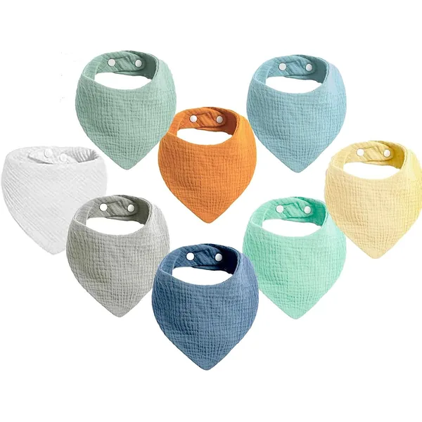
Pack 8 Babetes Algodão Dupla Camada
- 100% algodão
- Dupla camada
- Pack de 8
Porque escolhemos: a dupla camada é o que separa um babete que absorve de um que empurra a baba para a roupa. Oito chegam para não andar sempre a correr para a máquina.
Ver na Amazon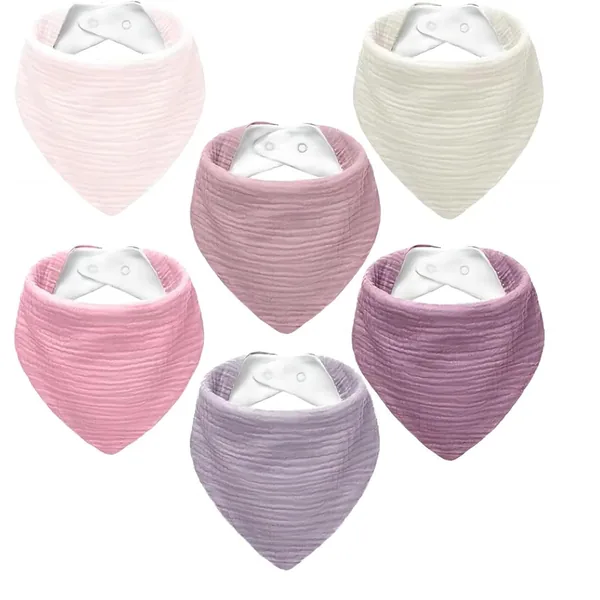
Babete Bandana Musselina — Pack 6
- Musselina de algodão
- Formato bandana
- Pack de 6
Porque escolhemos: frente em musselina e costas em tecido de secagem rápida. O formato bandana passa por parte da roupa, em vez de parecer um babete pendurado ao pescoço.
Ver na Amazon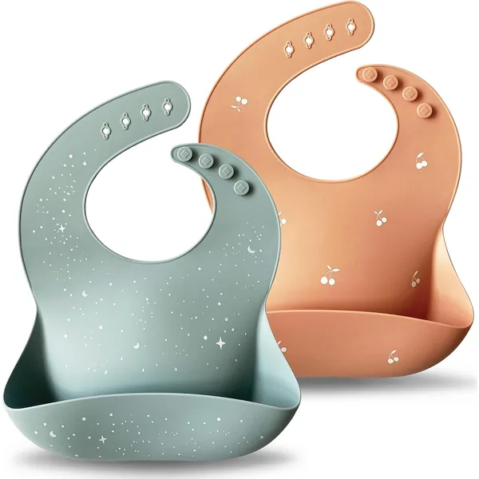
Babetes com Bolso Impermeável Silicone
- Silicone
- Impermeável
- Com bolso
- 4M+
Porque escolhemos: a partir das papas, um babete de pano deixa de chegar. Este limpa-se com água ou vai à máquina da loiça, e o bolso apanha o que escapa da colher.
Ver na AmazonMeias & Botinhas
As meias de bebé caem. O que distingue as boas é o punho — duplo e elástico sem apertar — e, a partir do momento em que se põem de pé, a sola antiderrapante.
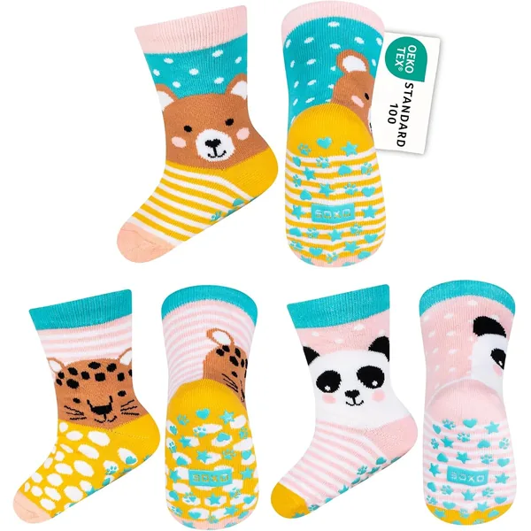
Pack 3 pares Meias Anti-Derrapantes
- Antiderrapante
- Punho duplo
- Pack de 3
Porque escolhemos: o grip antiderrapante conta mesmo quando o bebé começa a pôr-se de pé em soalho ou mosaico. O punho duplo não escorrega para fora do calcanhar a meio da manhã.
Ver na Amazon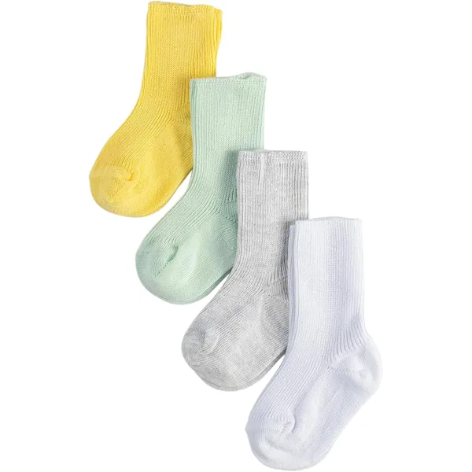
Pack 4 Meias Algodão Canelado Unissexo
- Algodão
- Canelado
- Unissexo
- Pack de 4
Porque escolhemos: canelado com elástico suave que não deixa marca no tornozelo — a queixa mais comum sobre meias de bebé baratas.
Ver na Amazon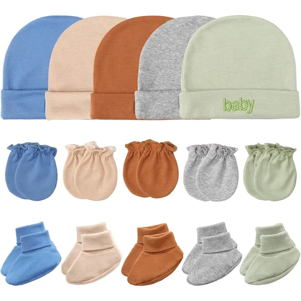
Conjunto Luvas + Meias + Touca Recém-Nascido — Pack 3
- 100% algodão
- Luvas + meias + touca
- Pack de 3
Porque escolhemos: as luvas evitam que o bebé se arranhe na cara nas primeiras semanas, quando ainda não controla as mãos. Vem com meias e touca a condizer.
Ver na AmazonTiaras, Chapéus & Acessórios de Cabelo
Tiaras de nylon fino não deixam marca na testa e são as únicas que fazem sentido antes do primeiro ano. Chapéus de malha, só sem costuras internas.
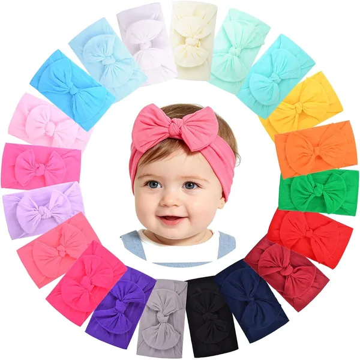
Pack 20 Tiaras Elásticas Nylon — Bebé e Criança
- Nylon elástico
- Não deixa marca
- Pack de 20
Porque escolhemos: nylon fino e elástico que não deixa marca na testa. Vinte unidades em cores variadas — há sempre uma que combina, sem andar a comprar à peça.
Ver na Amazon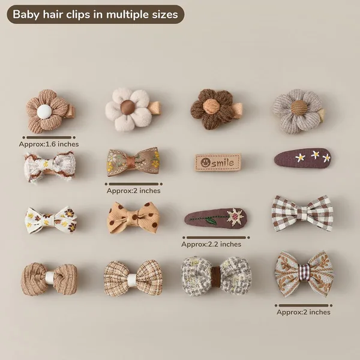
Pack 20 Ganchos de Cabelo Laço
- Cetim
- Ganchos
- Pack de 20
Porque escolhemos: ganchos em cetim para quando já há cabelo suficiente para prender. As cores foram pensadas para combinar com roupa de bebé, não com roupa de adulto.
Ver na Amazon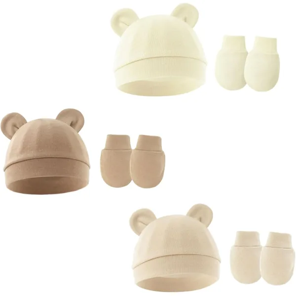
Pack 3 Chapéus de Malha Algodão Unissexo
- 100% algodão
- Malha canelada
- Sem costuras
- RN–6M
Porque escolhemos: sem costuras internas, que é o que costuma irritar a cabeça de um recém-nascido. Malha canelada de algodão, em neutros que servem com qualquer roupa.
Ver na AmazonCobertores & Mantas
As fraldas de musselina são o acessório com mais usos de toda esta página. As mantas de tricot são para o carrinho e para o berço durante o dia — nunca para dormir. Para dormir, usa um saco de dormir com o TOG adequado.
Vê as melhores ideias de presente de nascimento →
Pack 4 Fraldas de Musselina Algodão Orgânico
- Musselina
- Algodão orgânico
- Pack de 4
Porque escolhemos: é o item que mais usos acumula: manta, toalha, proteção do carrinho, pano de arrotar. A musselina amacia a cada lavagem em vez de endurecer.
Ver na Amazon
Manta de Tricot Algodão Orgânico 90×70cm
- Tricot
- Algodão orgânico
- 90×70 cm
Porque escolhemos: tricot elástico de algodão orgânico num tamanho que serve tanto para envolver o bebé como para o carrinho. É também a que fica bem numa fotografia do berço.
Ver na Amazon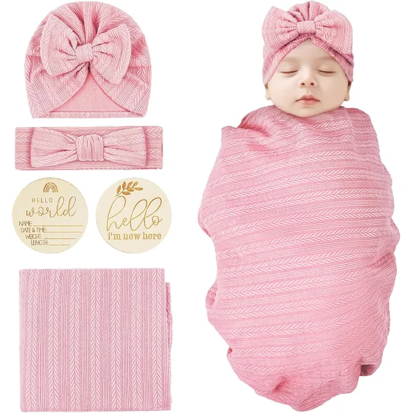
Manta com Sistema de Embrulho para Recém-Nascido
- Algodão
- Fecho de velcro
- 0–3M
Porque escolhemos: o embrulho com velcro faz em dois segundos o que um pano exige prática para fazer. A abertura em baixo deixa mudar a fralda sem desfazer tudo.
Ver na AmazonChupetas & Higiene Oral
Escolher chupeta é tentativa e erro: há bebés que só aceitam um formato de bico. Compra um par de dois modelos diferentes antes de comprar seis iguais.
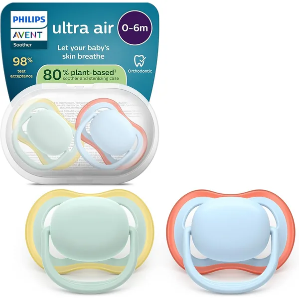
Pack 2 Chupetas Ultra Air 0–6 Meses
- Silicone
- Escudo ventilado
- 0–6M
- Pack de 2
Porque escolhemos: o escudo perfurado deixa a pele à volta da boca respirar, que é onde aparecem as irritações. O bico é simétrico, por isso encaixa seja de que lado for.
Ver na Amazon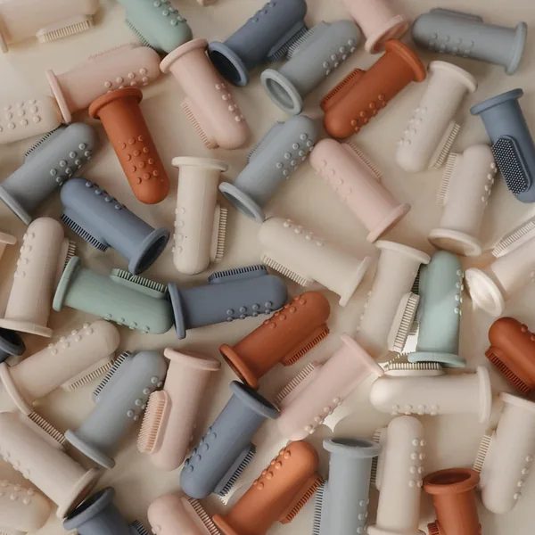
Escova de dentes de dedo para bebés
- Silicone
- Escova de dedo
- Sem BPA
Porque escolhemos: escova de dedo em silicone macio, para a fase em que uma escova normal ainda é grande de mais. Sem BPA nem ftalatos, e pode ser esterilizada.
Ver na Amazon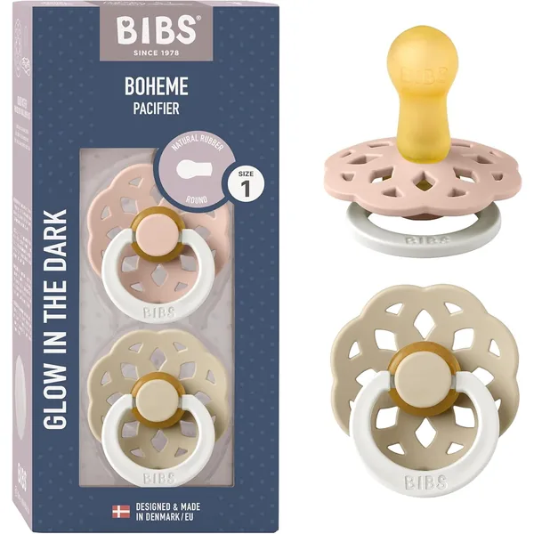
Chupeta Borracha Natural — Pack 2 — Denmark Design
- Borracha natural
- Bico redondo
- Pack de 2
Porque escolhemos: borracha natural em vez de silicone, com o bico redondo clássico e um escudo de desenho dinamarquês. Vem em par, o que ajuda — são das que mais se perdem.
Ver na AmazonProcuras roupa ou enxoval completo?
Explora as nossas outras categorias com as melhores seleções para o teu bebé.
Acessórios que podes dispensar
Esta é a categoria com mais compras por impulso. Estas são as que, na nossa opinião, não compensam.
- Kits de manicure para bebé. Uma lima de cartão chega e é mais segura do que qualquer tesoura minúscula.
- Porta-chupetas com corrente comprida. Se passa à volta do pescoço, é um risco. Usa só clips curtos presos à roupa.
- Almofadas de amamentação em duplicado. Uma chega. A segunda fica sempre no armário.
- Termómetro de banho. O cotovelo ou o pulso fazem o mesmo trabalho e não ficam sem pilha.